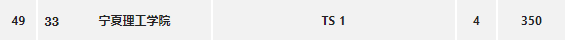

2020 沈阳补题记录与部分题目题解
说起来 20 沈阳可能是唯一一场（没有算 EC）线下打的 xcpc 了，首先祝贺 TS1队四题拿银证明自己。

D. Journey to Un’Goro
tag
题意
给定数 n ，要求求出满足条件的只含 b,r 的字符串的数量和字典序前 100 小的字符串。
其中字符串需满足的条件为：其中恰好包含奇数个 r 的子串数量最多。
其中 1≤n≤105 。
思路
首先考虑如何计算给定串的满足条件的子串数量。
考虑用 0,1 替换 b,r ，条件即转换为求和为奇数的字串数量。对转换后的串做一遍模 2 意义下的前缀和，满足条件的子串数量即为前缀和中的 0,1 匹配对数（包括表示空前缀的 0 ）。
那么显然数量最大即为前缀和中 0,1 数量最接近时，即前缀和中 1 的数量应为 2n+1 或者 2n+1。
那么这里已经找到了一个定量，因为只要求字典序前 100 小的字符串，暴力 DFS 时维护 1 的数量满足条件即可。
复杂度约为 O(100⋅n) 。
代码
1
2
3
4
5
6
7
8
9
10
11
12
13
14
15
16
17
18
19
20
21
22
23
24
25
26
27
28
29
30
31
32
33
34
35
36
37
38
39
40
41
42
| #include<bits/stdc++.h>
using namespace std;
using ll=long long;
constexpr int N=1e5+5;
int n;
int cnt,val,top;
char ans[N];
void dfs(int x,int now){
if(now+n-x+1<(n+1)/2) return;
if(x==n+1){
if(now==(n+1)/2||now==(n/2+1)){
for(int i=1;i<=n;i++) cout<<ans[i];
cout<<'\n';
cnt++;
}
return;
}
ans[x]='b';
if(now+val<=(n/2+1)) dfs(x+1,now+val);
if(cnt>=100) return;
ans[x]='r';
val=(val+1)%2;
if(now+val<=(n/2+1)) dfs(x+1,now+val);
val=(val+1)%2;
if(cnt>=100) return;
}
int main(){
ios::sync_with_stdio(0);
cin.tie(0);cout.tie(0);
cin>>n;
cout<<1ll*(n+1)/2*(n/2+1)<<'\n';
ans[0]='b';
dfs(1,0);
return true&&false;
}
|
F. Kobolds and Catacombs
tag
题意
最多将给定长为 n 的序列分成多少段，使得每一段分别升序排序后整个序列是不降的。
其中 1≤n≤106 。
思路
维护一个后缀最小值，从前往后贪心地划分，如果当前段的最大值小于等于当前后缀的最小值，就划分出一段即可。
代码
略。
G. The Witchwood
tag
题意
输出给定长为 n 的序列的前 k 大的数之和。
其中 1≤k≤n≤103 。
思路
输出即可。
代码
略。
H. The Boomsday Project
tag
题意
给出某人在 m 天内的租车情况 → 第 pi 天租了 qi 辆车。
给出某人可以的租车方案 → 花费 r 块单独租一辆车或者花费一定价格买一张优惠卡。其中第 i 张优惠卡需要花费 ci 块，使用可以免去接下来 di 天里最多 ki 辆车的花费，总共有 n 种不同的优惠卡，同一种卡可以重复购买。
其中 1≤n≤5⋅102,1≤m≤105,1≤r≤109,1≤di,ki,ci≤109,0≤pi≤109,0≤qi≤3⋅105,∑i=1mqi≤3⋅105 。
思路
首先观察到总共的租车数量比较小 →∑i=1mqi≤3⋅105 ，可以考虑将所有租的车按时间顺序排列出来 DP 。
具体实现为：
用 ai 表示排序后第 i 辆车被租的时间（单位为天）， dpi 表示排序后租前 i 辆车的最小花费，那么转移有两种情况：
- 不用优惠卡 →dp[i]=dp[i−1]+r 。
- 用优惠卡 →dp[i]=minj=1n(dp[x[j]]+c[j]) ，其中 xj 表示对于第 j 张卡最小的 x 使得第 x+1 到第 i 辆车都能被第 j 张卡作用到。考虑到 dpi 本身是单调不降的，所以在最小的 x 处转移一定是最优的。
对于第一种情况直接转移即可。对于第二种情况，观察可以发现对于同一张卡 j ， i 增大时 xj 也是单调不降的，所以对于每一个 j 单独双指针维护一个 xj 进行转移即可。
总复杂度为 O(n⋅∑qi) 。
代码
1
2
3
4
5
6
7
8
9
10
11
12
13
14
15
16
17
18
19
20
21
22
23
24
25
26
27
28
29
30
31
32
33
34
35
| #include<bits/stdc++.h>
using namespace std;
using ll=long long;
constexpr int N=3e5+5;
constexpr int M=5e2+5;
int n,m,r;
int a[N];
int d[M],k[M],c[M],x[M];
ll dp[N];
int main(){
ios::sync_with_stdio(0);
cin.tie(0);cout.tie(0);
cin>>n>>m>>r;
for(int i=1;i<=n;i++) cin>>d[i]>>k[i]>>c[i];
for(int i=1,x,y;i<=m;i++){
cin>>x>>y;
while(y--) a[++a[0]]=x;
}
sort(a+1,a+1+a[0]);
for(int i=1;i<=a[0];i++){
dp[i]=dp[i-1]+r;
for(int j=1;j<=n;j++){
while(a[i]-a[x[j]+1]>=d[j]||i-x[j]>k[j]) x[j]++;
dp[i]=min(dp[i],dp[x[j]]+c[j]);
}
}
cout<<dp[a[0]];
return true&&false;
}
|
I. Rise of Shadows
tag
题意
某地一天有 H 小时，一小时有 M 分钟，给出角度 α=H⋅M2⋅π⋅A ，问一天中有多少个整数分时刻时针与分针的夹角小于等于 α 。
其中 2≤H,M≤109,0≤A≤2H⋅M 。
思路
考虑固定时针不动，只考虑分针相对于时针的运动位置。
方便考虑将时钟展开成长度为 H⋅M 的线段，时针始终位于坐标 0 位置，展开后时针的速度为每分钟 1 个单位长度，分针的速度为每分钟 H 个单位长度，分针相对于时针的速度即为每分钟 H−1 个单位长度。
那么可以算出 t 分钟时刻分针的坐标为 t⋅(H−1)modH⋅M 。因为 α=H⋅M2⋅π⋅A ，转换到线段上可以得到分针位置需要满足的条件为：
t⋅(H−1)modH⋅M≤A
t⋅(H−1)modH⋅M≥H⋅M−A
两个条件满足一个即可。
由于两个式子所表示的区间互不相交，可以分开计算，这里我们令 G=gcd(H−1,H⋅M) 。
对于第一个式子
满足条件的 t 的数量即为 i=0∑H⋅M−1[t⋅(H−1)modH⋅M≤A] 。
这里可以分成两种情况来计算：
- G=1 时， t∈[0,H⋅M) 所构成的是一个模 H⋅M 的完全剩余系，由剩余系的性质可以得到 t⋅(H−1) 也是一个模 H⋅M 的完全剩余系，所以只需要算出 [0,H⋅M) 内小于等于 A 的数量即可，答案显然是 A+1 。
- G=1 时，由同余方程的性质 a⋅c≡b⋅cmodd⟺a≡bmodgcd(c,d)d 可以把原式子转换为 i=0∑H⋅M−1[Gt⋅(H−1)modGH⋅M≤⌊GA⌋] 。这相当于是把线段 [0,H⋅M) 均分成了 G 份， 其中每份都是一个模 GH⋅M 的完全剩余系，也就是上一种情况，因此每一段都对答案有 ⌊GA⌋+1 的贡献，总贡献即为 G⋅(⌊GA⌋+1) 。
对于第二个式子
除了 t=H⋅M 处不能取到外其余和第一个式子相同，因此对答案的贡献为 G⋅⌊GA⌋ 。
所以最后答案即为 G⋅(2⋅⌊GA⌋+1) 。
注意 A=2H⋅M 的情况下所有位置都满足条件，特判答案为 H⋅M 。
总复杂度为 O(log(H⋅M)) 。
代码
1
2
3
4
5
6
7
8
9
10
11
12
13
14
15
16
17
18
19
20
21
| #include<bits/stdc++.h>
using namespace std;
using ll=long long;
ll h,m,a;
ll ans;
int main(){
ios::sync_with_stdio(0);
cin.tie(0);cout.tie(0);
cin>>h>>m>>a;
if(a==h*m/2) cout<<h*m;
else{
ll g=__gcd(h-1,h*m);
cout<<g*(a/g*2+1);
}
return true&&false;
}
|
J. Descent of Dragons
tag
题意
给定长为 n 的序列，初始全为 0 ， q 次操作，每次操作将区间 [l,r] 内等于 x 的数加 1 或者查询区间 [l,r] 的最大值。
其中 1≤n,q≤5⋅105 。
思路
其实赛后重新看也没有什么思路，题解给出的似乎是 5⋅105 棵平衡树的合并加维护区间标记？不是很理解。最后是参照了另一种主席树的做法，重新梳理一遍。
由操作 1 将所有 x 的值加 1 可以联想到版本更新操作，考虑对值域可持久化，第 i 棵树维护所有值大于等于 i 的下标。
考虑查询操作，查询区间 [l,r] 的最大值时可以考虑二分答案，查询对应树维护的区间内是否有值，二分加查询复杂度为 O(log2n) 。
考虑更新操作，每次更新区间 [l,r] 内的数 x 即考虑将第 x 棵树在 [l,r] 区间内的节点复制到第 x+1 棵树内，因为考虑的维护的是值大于等于 x 所有位置，所以第 x 棵树内的值一定是第 x+1 棵树的超集，直接复制节点是对的。因为树包含在区间 [l,r] 内的节点数量是 O(logn) 级别的， q 次操作总共增加的节点个数是 O(n⋅logn) 级别的，空间给了 1024MB ，完全足够。同理更新操作的总复杂度也是 O(n⋅logn) 级别的。
更新加查询的总复杂度为 O(n⋅log2n) 。
代码
注意节点空间大小。
1
2
3
4
5
6
7
8
9
10
11
12
13
14
15
16
17
18
19
20
21
22
23
24
25
26
27
28
29
30
31
32
33
34
35
36
37
38
39
40
41
42
43
44
45
46
47
48
49
50
51
52
53
54
55
56
57
58
59
60
61
62
63
64
65
66
67
68
69
70
71
72
73
74
75
76
77
78
79
80
81
82
83
84
85
86
87
88
89
| #include<bits/stdc++.h>
using namespace std;
using ll=long long;
constexpr int N=5e5+5;
int n,q;
struct tree{
int tot;
int rt[N];
int lc[N<<6];
int rc[N<<6];
int val[N<<6];
void cpy(int x,int y){
lc[x]=lc[y];
rc[x]=rc[y];
val[x]=val[y];
}
void pushup(int x){
val[x]=(val[lc[x]]|val[rc[x]]);
}
void build(int &x,int l,int r){
x=++tot;
val[x]=1;
if(l==r) return;
int mid=l+r>>1;
build(lc[x],l,mid);
build(rc[x],mid+1,r);
return;
}
void update(int &x,int pre,int l,int r,int ql,int qr){
if(l>=ql&&r<=qr){
x=pre;
return;
}
tot++;
cpy(tot,x);
x=tot;
int mid=l+r>>1;
if(mid>=ql&&mid+1<=qr){
update(lc[x],lc[pre],l,mid,ql,qr);
update(rc[x],rc[pre],mid+1,r,ql,qr);
}
else if(mid>=ql) update(lc[x],lc[pre],l,mid,ql,qr);
else update(rc[x],rc[pre],mid+1,r,ql,qr);
pushup(x);
return;
}
int search(int x,int l,int r,int ql,int qr){
if(!x) return 0;
if(l>=ql&&r<=qr) return val[x];
int res=0;
int mid=l+r>>1;
if(mid>=ql) res|=search(lc[x],l,mid,ql,qr);
if(mid+1<=qr) res|=search(rc[x],mid+1,r,ql,qr);
return res;
}
}t;
int main(){
ios::sync_with_stdio(0);
cin.tie(0);cout.tie(0);
cin>>n>>q;
t.build(t.rt[0],1,n);
while(q--){
int op;
cin>>op;
if(op==1){
int ql,qr,x;
cin>>ql>>qr>>x;
t.update(t.rt[x+1],t.rt[x],1,n,ql,qr);
}
else{
int ql,qr;
cin>>ql>>qr;
int l=0,r=5e5+1,ans=0;
while(l<=r){
int mid=l+r>>1;
if(t.search(t.rt[mid],1,n,ql,qr)) ans=mid,l=mid+1;
else r=mid-1;
}
cout<<ans<<'\n';
}
}
return true&&false;
}
|
K. Scholomance Academy
tag
题意
大模拟。
思路
略。
代码
略。
M. United in Stormwind
tag
题意
有 m 个问题，每个问题的结果为 A 或 B ，有 n 份答案，每份答案可以用一个长为 m 的只含 A,B 的字符串表示，求有多少个问题的非空子集使得有不少于 k 对答案不完全相同。
其中 1≤n≤2⋅105,1≤m≤20,1≤k≤2n⋅(n−1) 。
思路
考虑到 m 的范围只有 [0,20] ，考虑用 0,1 替代 A,B ，则问题转换为有 n 个 m 位 2 进制数，求有多少个位的子集使得有不少于 k 对数字对应位上异或起来不为 0 。
考虑两个数 x=(101)2， y=(110)2，则 x⨁y=z=(011)2。则可以发现只要我选择的集合里包含了 z 中 1 所在的位置（ 0 位和 1 位），那么这一对数 (x,y) 就会对我选择的这一集合产生贡献。
那么我可以先考虑求出原数组中的数两两异或后每个结果出现的次数，即：
F(S)=x=0∑2m−1y=x+1∑2m−1[x⨁y=S]
F(S) 表示异或后结果中 S 出现的次数，很明显这可以用一次 fwt 处理出来。那么所有与 S 有交集的集合都会得到 F(S) 的贡献，容斥一下把所有与 S 不相交的集合减去相应的贡献即可，这里也可以用一个 fwt 或者 sosdp 处理好。
fwt 或者 sosdp 的总复杂度为 O(m⋅2m) 。
代码
1
2
3
4
5
6
7
8
9
10
11
12
13
14
15
16
17
18
19
20
21
22
23
24
25
26
27
28
29
30
31
32
33
34
35
36
37
38
39
40
41
42
43
44
45
46
47
| #include<bits/stdc++.h>
using namespace std;
using ll=long long;
int n,m;
ll k,f[1<<20],g[1<<20],ans;
inline void XOR(long long *f,double x=1){
for(int o=2,k=1;o<=(1<<m);o<<=1,k<<=1)
for(int i=0;i<(1<<m);i+=o)
for(int j=0;j<k;j++){
f[i+j]+=f[i+j+k];
f[i+j+k]=f[i+j]-f[i+j+k]*2;
f[i+j]=f[i+j]*x;
f[i+j+k]=f[i+j+k]*x;
}
}
int main(){
ios::sync_with_stdio(0);
cin.tie(0);cout.tie(0);
cin>>n>>m>>k;
for(int i=1,x;i<=n;i++){
string s;
cin>>s;
x=0;
for(auto c:s) x=(x<<1)|(c=='A');
f[x]++;
}
XOR(f);
for(int i=0;i<(1<<m);i++) f[i]*=f[i];
XOR(f,0.5);
f[0]-=n;
for(int i=0;i<(1<<m);i++){
f[i]/=2;
int mask=((1<<m)-1)^i;
g[mask]-=f[i];
}
for(int i=0;i<m;i++)
for(int j=(1<<m)-1;j>=0;j--) if((j&(1<<i))==0) g[j]+=g[j^(1<<i)];
for(int i=0;i<(1<<m);i++) ans+=(g[i]+1ll*n*(n-1)/2>=k);
cout<<ans;
return true&&false;
}
|